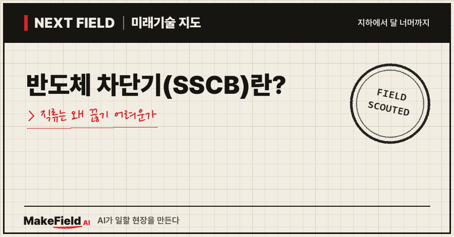
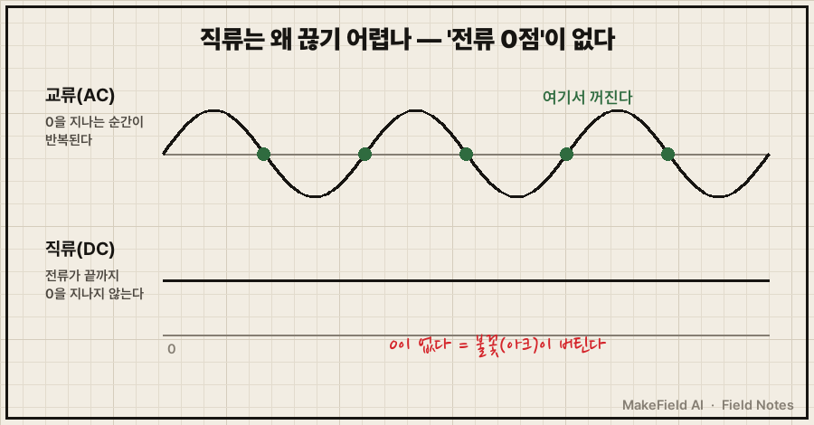
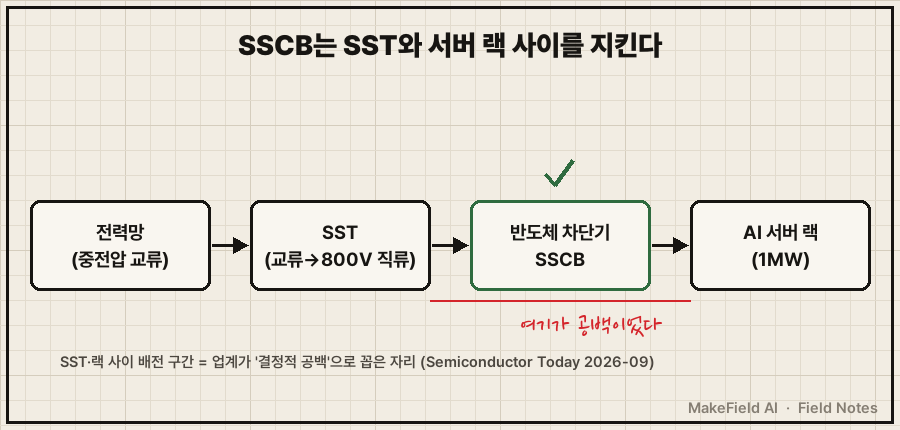
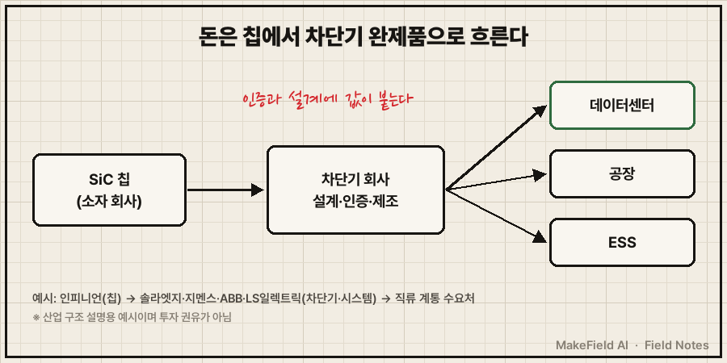

한 줄 요약: 반도체 차단기(SSCB)는 기계 접점 대신 반도체 스위치로 고장 전류를 마이크로초(100만분의 1초) 단위에 끊는 차단기이고, 기계식 차단기는 밀리초(1,000분의 1초) 단위가 필요해요(onsemi 백서 2025-02). 전류가 0을 지나지 않는 직류는 기계식으로 끊기 어려워서, 800V 직류로 바뀌는 AI 데이터센터가 이 차단기를 새로 찾고 있습니다.
💡 차단기 — 전선에 너무 큰 전류(합선·고장)가 흐르면 전기를 끊어 불과 장비 손상을 막는 장치. 집 두꺼비집 안의 그 스위치다.
SSCB는 2026년 들어 칩 회사와 차단기 회사의 협력 발표가 잇따른 분야예요. 인피니언–지멘스(2026-06), 인피니언–LS일렉트릭(2026-07), 인피니언–솔라엣지(2026-09)가 모두 이 장치를 들고 나왔습니다. 2026년 10월 기준으로 SSCB가 무엇이고, 왜 지금이며, 돈은 어디로 흐르는지 풀어 볼게요.
1. 반도체 차단기(SSCB)란 무엇인가요
반도체 차단기란 움직이는 접점 없이, 전력반도체를 꺼서 전류를 끊는 차단기다. 기계식 차단기는 금속 접점 두 개를 물리적으로 벌려 전기를 끊어요. SSCB는 그 일을 칩이 합니다.
💡 SSCB(Solid-State Circuit Breaker) — '고체 상태 차단기'라는 뜻. 기계 부품이 움직이지 않는다는 의미로 '고체(solid-state)'라는 말을 붙였다. 국내 기사에서는 '반도체 차단기'로 부른다(뉴시스 2026-07).
💡 전력반도체 — 큰 전류를 아주 빠르게 켜고 끄는 반도체 스위치. SSCB에서는 '끄는 쪽' 역할을 맡는다.
미국 반도체 회사 온세미의 백서는 SSCB를 기계식과 이렇게 비교해요(onsemi 백서 2025-02).
| 항목 | 기계식 차단기 | SSCB |
|---|---|---|
| 끊는 속도 | 밀리초(1,000분의 1초) 단위 | 나노~마이크로초 단위 |
| 직류 차단 | 아크(불꽃)를 막는 별도 장치가 필요 | 복잡한 아크 대책 없이 차단 가능 |
| 수명 | 접점이 닳아 교체 필요 | 움직이는 부품이 없어 반복 차단에 유리 |
| 평소 손실·값 | 접점 저항이 작다 | 저항이 커서 1A당 값이 훨씬 비싸다 |
같은 백서는 SSCB를 크게 두 갈래로 나눠요. 칩만으로 끊는 완전 반도체형, 그리고 기계 접점과 반도체를 섞은 하이브리드형입니다(onsemi 백서 2025-02).
2. 직류는 왜 끊기 어렵나요
직류는 교류와 달리 전류가 저절로 0이 되는 순간이 없어서, 접점을 벌려도 불꽃(아크)이 잘 꺼지지 않는다. 교류는 1초에도 여러 번 방향이 바뀌며 그때마다 전류가 0을 지나가요. 기계식 차단기는 바로 그 0의 순간에 기대어 불꽃을 끕니다. 직류에는 그런 순간이 없어요.

💡 아크 — 전류가 흐르는 접점을 떼어 낼 때 그 틈으로 전기가 불꽃처럼 계속 건너가는 현상. 오래 이어지면 접점이 녹고 불이 날 수 있다.
솔라엣지와 인피니언의 2026년 9월 발표문은 이 문제를 한 문장으로 적었어요. "자연적인 전류 0점이 없으면, 기계식 차단은 아크 문제에 부딪힌다."(Semiconductor Today 2026-09) SSCB는 접점을 벌리지 않고 칩을 꺼 버리기 때문에 이 아크 문제를 피해 갑니다.
3. 왜 지금 AI 데이터센터가 반도체 차단기를 찾나요
AI 데이터센터가 랙 하나에 1MW를 넣는 800V 직류 배전으로 옮겨 가면서, 직류를 빠르게 끊는 장치가 필요해졌다. ABB는 2025년 10월 엔비디아와의 협력을 발표하며, 엔비디아가 도입할 예정인 "1MW 서버 랙용 800V 직류 전력 구조"를 지원한다고 밝혔어요(ABB 보도자료 2025-10).
💡 랙 — 서버를 층층이 꽂는 철제 선반. 1MW는 이 선반 하나가 쓰는 전력이다.
💡 800V 직류 배전 — 데이터센터 안에서 전기를 교류 대신 800볼트 직류로 랙까지 보내는 방식. 변환 단계가 줄어 손실이 적다.
그럼 차단기는 어디에 들어갈까요. 솔라엣지·인피니언 발표는 그 자리를 반도체 변압기(SST)와 서버 랙 사이의 배전 구간으로 짚고, 이곳을 "결정적인 공백"이라고 불렀어요(Semiconductor Today 2026-09). 같은 발표에서 솔라엣지 SST는 13.8~34.5kV 중전압을 받아 800~1,500V 직류로 내보내는 장치로 소개됩니다(회사 발표).
💡 SST(반도체 변압기) — 구리 코일·철심 대신 전력반도체로 전압을 바꾸는 변압기. 교류를 받아 바로 직류로 내보낼 수 있다.

전압이 높고 전류가 큰 직류 계통일수록 합선 때 전류가 순식간에 커져요. 온세미 백서는 SSCB의 속도가 "내부 저항이 아주 작은 전원"을 끊을 때 특히 값지다고 적었습니다(onsemi 백서 2025-02). 지난 Next Field에서 다룬 800V 직류 데이터센터가 '배선'의 변화였다면, SSCB는 그 배선의 '안전장치'를 바꾸는 이야기예요.
4. 돈의 흐름 — 누가 팔고 누가 사나요
칩 회사가 SiC 소자를 차단기 회사에 팔고, 차단기 회사가 완제품을 데이터센터·공장·에너지저장장치(ESS)에 판다. 2025~2026년 공개 발표를 구간별로 묶으면 이렇습니다.
| 구간 | 누가 하나(예시) | 무엇을 | 출처 |
|---|---|---|---|
| 칩(소자) | 인피니언 | SiC JFET(솔라엣지용), 62mm CoolSiC 1,200V MOSFET 모듈(지멘스용) | Semiconductor Today 2026-09 · 실리콘 작센 2026-06 |
| 차단기 설계·제조 | 솔라엣지 | 800V 직류 데이터센터용 SSCB 설계 주도 | Semiconductor Today 2026-09 |
| 차단기 설계·제조 | 지멘스 | SENTRON 3QD2(SSCB) | 실리콘 작센 2026-06 |
| 차단기 설계·제조 | ABB | SACE Infinitus, 엔비디아 800V 구조 협력 | ABB 보도자료 2025-10 |
| 시스템 통합(한국) | LS일렉트릭 | 인피니언과 SST·SSCB·ESS용 PCS 공동 개발 협약 | 뉴시스 2026-07 |
| 최종 수요 | 데이터센터 운영사, 공장, ESS | 직류 계통 보호 | 각 발표문 |
💡 SiC(탄화규소) — 실리콘보다 높은 전압을 적은 손실로 견디는 전력반도체 재료.
💡 JFET·MOSFET — 둘 다 전류를 켜고 끄는 반도체 스위치의 구조 이름. 온세미 백서는 600~2,000V 구간에서 SiC 소자가 같은 면적당 저항이 가장 낮아 차단기에 유리하다고 적었다(onsemi 백서 2025-02).

LS일렉트릭–인피니언 협약의 역할 분담이 이 구조를 잘 보여 줘요. LS일렉트릭은 시스템 설계·통합·구축과 상용화를, 인피니언은 전력반도체와 전력 제어 기술을 맡았습니다(뉴시스 2026-07). 칩만으로는 차단기가 되지 않고, 보호 알고리즘·인증·현장 적용을 묶는 쪽이 완제품을 팝니다.
시장 규모는 아직 초기 단계로 보여요. 시장조사업체 퓨처마켓인사이츠는 800V 직류 랙용 반도체 차단 장치 시장을 2026년 4억 480만 달러, 2036년 16억 950만 달러(연 14.8% 성장)로 추정했습니다(Future Market Insights 2026-09, 추정치). 같은 보고서는 이튼·슈나이더·버티브·ABB·델타·인피니언·TI·온세미를 주요 참여사로 꼽았어요.
※ 위 기업명과 시장 전망치는 산업 구조를 설명하기 위한 예시입니다. 특정 종목의 매수·매도를 권하는 글이 아닙니다.
5. SSCB는 언제 일상이 되나요 — 한계와 반대 근거
발표는 쏟아지지만, 2026년 10월 현재 공개된 것은 대부분 협력 발표와 회사 주장이고 대규모 납품 실적은 확인되지 않는다. 따져 볼 점을 정리하면 이래요.
- 평소 손실과 값: SSCB는 기계 접점보다 저항이 커서 1A당 값이 훨씬 비싸요. 반도체의 정격 전압이 올라가면 같은 면적에서 저항이 전압의 2~2.5제곱에 비례해 커져, 전압 등급이 높을수록 값 부담이 커집니다(onsemi 백서 2025-02).
- '1,000배 빠르다'는 최대치: 지멘스 SENTRON 3QD2는 마이크로초 단위 차단으로 기존 방식보다 "최대 1,000배" 빠르다고 소개됐어요(실리콘 작센 2026-06). '최대'라는 단서가 붙은 회사 측 수치입니다.
- '세계 최초 IEC 인증'은 회사 주장: ABB는 SACE Infinitus를 "세계 최초로 IEC 인증을 받은 반도체 차단기"로 소개했어요(ABB 보도자료 2025-10). 독립 기관의 비교 자료는 이 글에서 찾지 못했습니다.
- 협약 단계: LS일렉트릭–인피니언은 업무협약(MOU)이고, 기사에 출시 일정·투자 규모는 나오지 않아요(뉴시스 2026-07).
- 시장 숫자는 한 곳 추정: 위 시장 규모는 조사업체 1곳의 전망이라 다른 조사와 교차 확인되지 않았습니다(추정).
정리하면 SSCB는 '직류를 빨리 끊어야 하는 곳'부터 들어가는 장치예요. 다음 확인 지점은 800V 직류 데이터센터가 실제로 지어지는 속도, 그리고 차단기 회사들의 첫 대규모 납품 소식입니다.
자주 묻는 질문
Q. 반도체 차단기가 집 두꺼비집 차단기를 대체하나요?
이 글에서 본 발표들은 데이터센터·공장·ESS 같은 직류 계통을 겨냥해요(실리콘 작센 2026-06, Semiconductor Today 2026-09). 1A당 값이 기계식보다 훨씬 비싸다는 점(onsemi 백서 2025-02)을 보면, 가정용 교체를 말할 근거는 아직 없습니다.
Q. 하이브리드 차단기는 무엇이 다른가요?
기계 접점과 반도체를 함께 쓰는 방식이에요. 온세미 백서는 SSCB를 하이브리드형과 움직이는 부품이 없는 완전 반도체형으로 나눴고, 이 글은 완전 반도체형을 중심으로 다뤘습니다(onsemi 백서 2025-02).
Q. 왜 SiC 칩이 주로 쓰이나요?
온세미 백서는 600~2,000V 구간에서 SiC 소자가 같은 면적당 저항이 가장 낮아, 평소 손실이 가장 적고 작고 값싼 차단기를 만들 수 있다고 적었어요(onsemi 백서 2025-02). 인피니언이 솔라엣지·지멘스에 공급하는 소자도 모두 SiC입니다.
오늘의 용어 정리
- 반도체 차단기(SSCB) — 반도체 스위치로 마이크로초 단위에 고장 전류를 끊는 차단기
- 차단기 — 고장 전류가 흐르면 전기를 끊는 안전장치
- 아크 — 접점을 뗄 때 틈으로 전기가 불꽃처럼 건너가는 현상
- 전류 0점 — 교류 전류가 방향을 바꾸며 0을 지나는 순간. 직류에는 없다
- 800V 직류 배전 — 데이터센터 안에서 800볼트 직류로 랙까지 전기를 보내는 방식
- SST(반도체 변압기) — 전력반도체로 전압을 바꾸는 변압기
- SiC(탄화규소) — 고전압에 강하고 손실이 적은 전력반도체 재료
- 하이브리드 차단기 — 기계 접점과 반도체를 섞은 차단기
지난 Next Field에서 SiC 공급과잉을 다뤘는데, 값이 내려간 그 SiC 칩이 새로 들어가는 자리 중 하나가 오늘의 SSCB예요. 여러분은 SSCB의 비싼 1A당 값이 데이터센터의 '빠른 차단'이라는 이득으로 충분히 상쇄된다고 보시나요?
출처
[1] onsemi 백서(2025-02) — 반도체 차단기 장단점: 나노~마이크로초 차단(기계식은 밀리초), 복잡한 아크 대책 없이 직류 차단, 접점 마모 없음, 저항이 커 1A당 값이 비쌈, 정격 전압에 따라 저항이 전압의 2~2.5제곱으로 증가, 600~2,000V에서 SiC가 면적당 저항 최저, 하이브리드형·완전 반도체형 구분
→ https://www.onsemi.com/download/white-papers/pdf/tnd6470-d.pdf
[2] Semiconductor Today(2026-09) — 인피니언·솔라엣지 800V 직류 데이터센터용 반도체 차단기 협력: 솔라엣지 설계 주도·인피니언 SiC JFET 공급, SST와 랙 사이 배전 구간 공백, 수 마이크로초 차단, "자연적인 전류 0점이 없으면 기계식 차단은 아크 문제", 솔라엣지 SST 13.8~34.5kV 입력·800~1,500V 직류 출력
→ https://semiconductor-today.com/news_items/2026/sep/infineon-100926.shtml
[3] 실리콘 작센(2026-06) — 지멘스 반도체 차단기 SENTRON 3QD2에 인피니언 62mm CoolSiC 1,200V MOSFET 모듈 적용, 마이크로초 단위 차단·기존 방식보다 최대 1,000배 빠름, 데이터센터·공장·ESS·직류 계통 대상
→ https://silicon-saxony.de/en/infineon-and-siemens-silicon-carbide-technology-to-advance-electrical-protection-in-data-centers-and-factories/
[4] ABB 보도자료(2025-10) — ABB–엔비디아 협력, 1MW 서버 랙용 800V 직류 전력 구조 지원, SACE Infinitus를 세계 최초 IEC 인증 반도체 차단기로 소개(회사 주장)
→ https://www.taiwannews.com.tw/en/news/6219182
[5] 뉴시스(2026-07) — LS일렉트릭·인피니언 2026-07-10 업무협약: ESS용 PCS·반도체 변압기(SST)·반도체 차단기(SSCB) 공동 개발, LS일렉트릭 시스템 설계·통합·상용화, 인피니언 전력반도체·전력 제어 기술
→ https://www.newsis.com/view/NISX20260713_0003706179
[6] Future Market Insights(2026-09) — 800V 직류 랙용 반도체 차단 장치 시장 2026년 4억 480만 달러 → 2036년 16억 950만 달러, 연 14.8% 성장 추정, 주요 참여사 목록
→ https://www.futuremarketinsights.com/reports/800vdc-rack-solid-state-disconnects-market